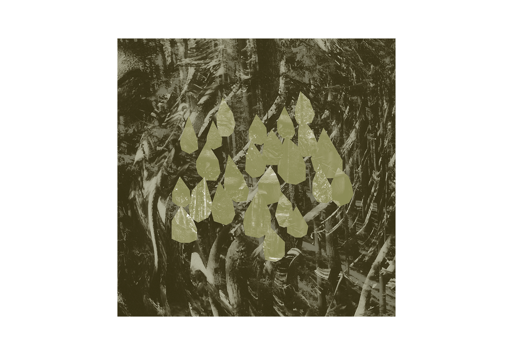
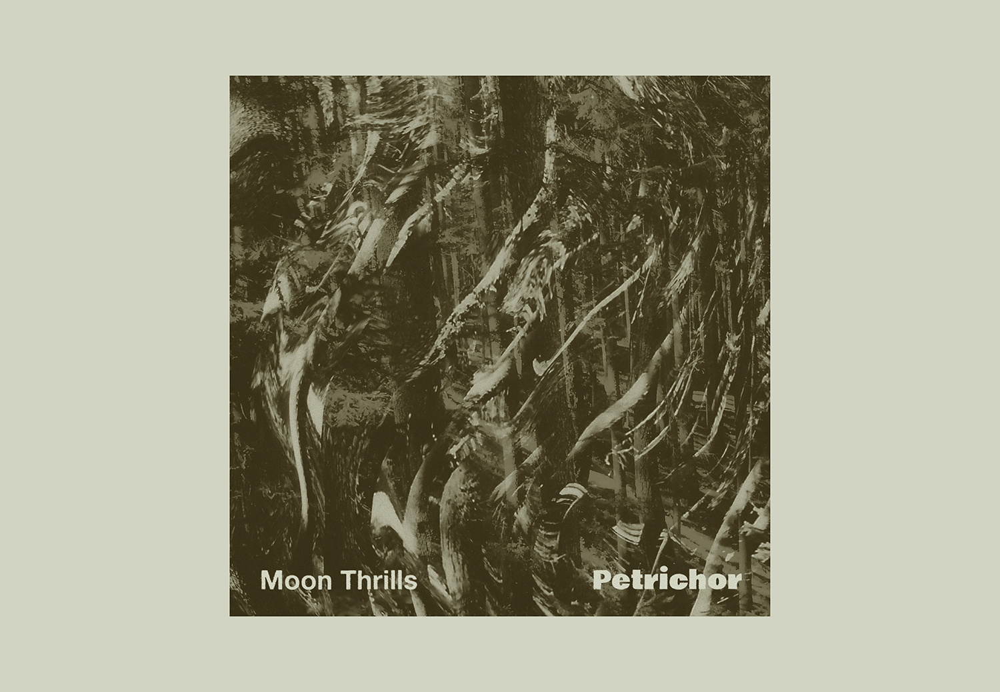
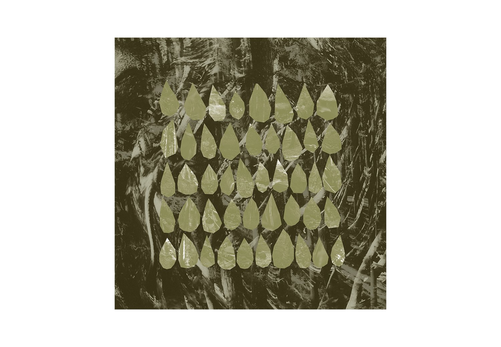
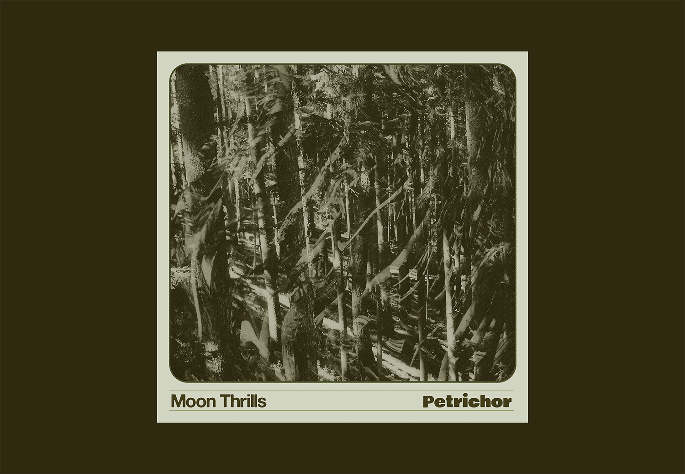
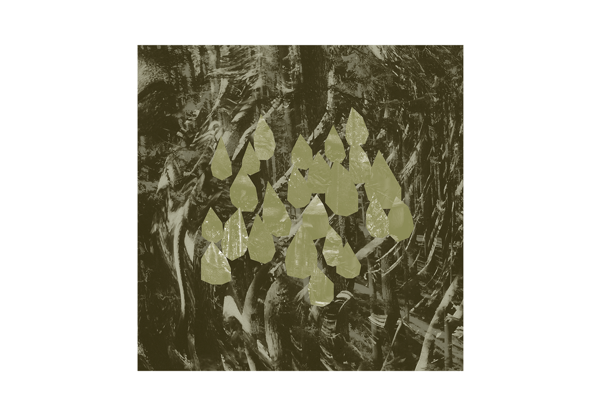
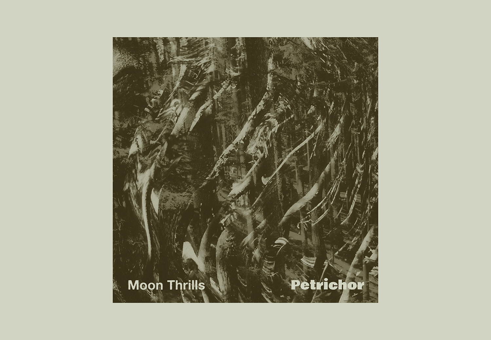
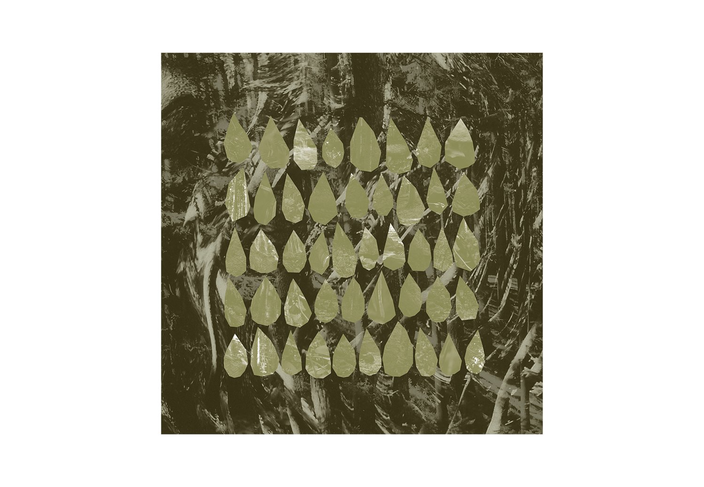
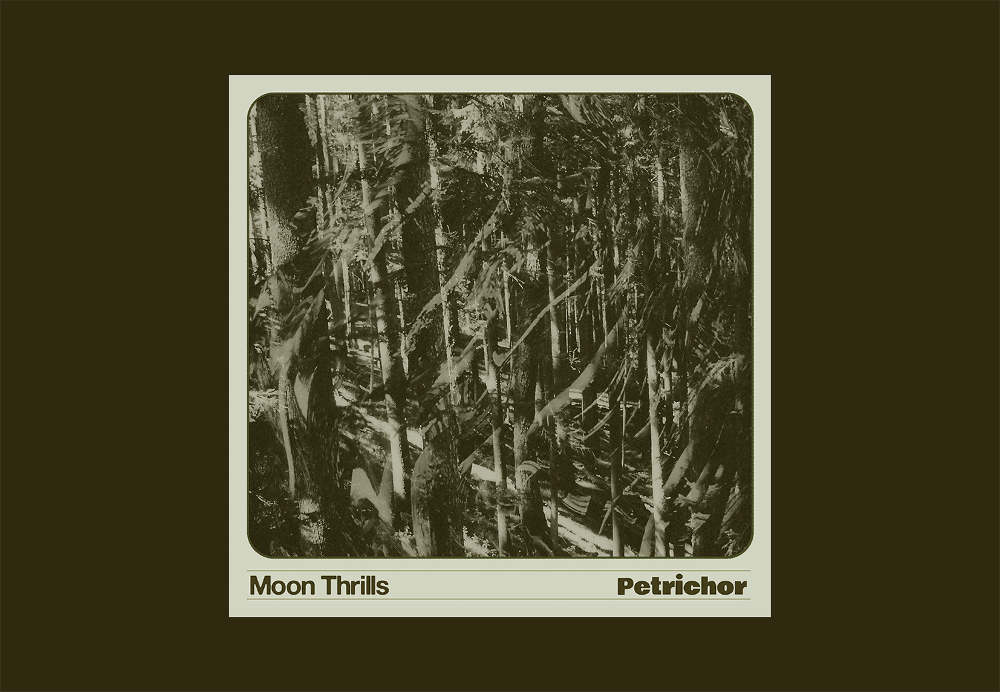

Moon Thrills
Conception de l'artwork de ‘Petrichor’, le premier single du duo londonien de trip-hop Moon Thrills, composé de Quentin Lachapele compositeur de musique de film français, et Sophie Watson, jazzwoman ecossaise.
« Avec leur premier single ‘Petrichor’, Moon Thrills nous hypnotise. Le morceau commence par des percussions électroniques, des rythmes fragiles qui nous viennent de toutes parts, les textures de sons synthétiques mêlés à celles du piano et de la guitare viennent se fondre au contact des voix envoûtantes de Sophie et Quentin. La superposition de tous ces sons finit par créer un spectre saturé d'informations dans lequel on distingue toujours une certaine présence organique en filigrane. » Jeremy Dunne
Sorti le 2 juin sur le label Nuance records.

 






